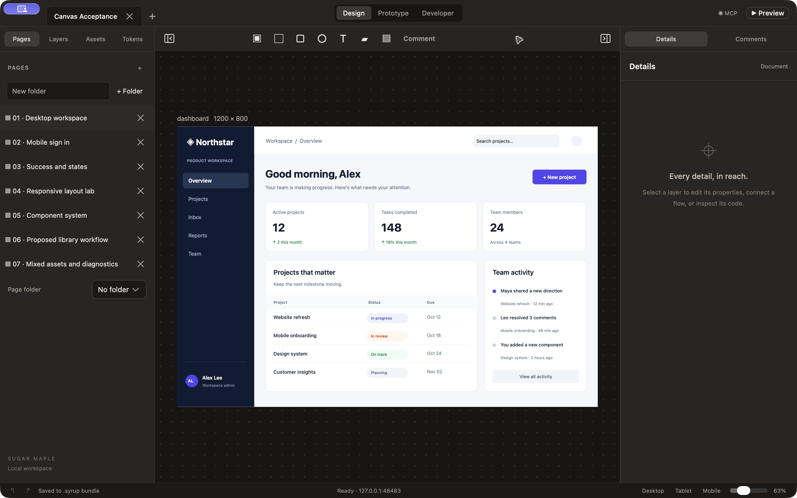

Canvas delivery · 1 October 2026
The Whiteboard canvas is in the real editor.
The design viewport now uses the actual Just-Maple Whiteboard CanvasComponent. Sugar Maple's document store, transactions, components, history, persistence and MCP remain authoritative. Native DOM controls remain in prototype preview.
Adoption decision
Adopt the canvas for design editing with the existing scene projection and native preview. The integrated camera, hit testing, gestures, comments, inspector and capture use the same geometry. Each completed drag or resize is one undoable transaction; cancellation and stale revisions discard the draft.

Resolved product QA
The original report is preserved as the pre-implementation baseline. These are the concrete QA-01 through QA-10 fixes; larger roadmap features remain separate.
| Finding | Resolution | Status |
|---|---|---|
| QA-01 | Structured native MCP errors HTTP and stdio retain error codes, cause, document/revision and recovery guidance. | Verified |
| QA-02 | Strict tool inputs Invalid export targets and invalid batches reject before mutation. | Verified |
| QA-03 | Variant and token precedence Literal variant fills shadow inherited tokens; bindings, overrides and reset are retained. | Verified |
| QA-04 | Portable component clipboard Recursive master dependencies, token collisions, variants and local overrides survive cross-document paste. | Verified |
| QA-05 | Cross-page prototype authoring The picker lists document artboards with page context and reflects existing links. | Verified |
| QA-06 | Multiline web exports HTML, Angular and Tailwind retain authored whitespace. | Verified |
| QA-07 | SwiftUI control fidelity Control font sizes/weights and stack/control padding are emitted; a real consumer typechecks. | Verified |
| QA-08 | Image diagnostics and repair Decode failures identify nodes. Replace image validates pixels and preserves the layer; undo restores the original. | Verified |
| QA-09 | Working dissolve preview Actual crossfade, transition selection, Back, reduced motion and unchanged authored revision. | Verified |
| QA-10 | Green acceptance gate The full original runner passes with canvas regressions; CI runs the same 15 suites and typecheck. | Verified |
Evidence behind the decision
All original browser jobs pass, together with canvas cancellation, image repair/undo, layout parity and culling checks. The original phone design's strict pixel tolerance passes without relaxing it. The existing 18-page, 1,154-node design snapshot renders without clipped preview labels and passes its onboarding, evidence and notebook flows.
Real native HTTP and stdio validate exact-revision canvas capture, atomic edits, undo, retries, durable saves and typed failures. Native Open selects a .syrup package; Save As synchronizes its name. A Mac pointer drag is read through MCP and undone. Force-kill/relaunch preserves scene, revision, retry receipts, undo and redo.
Model tests · 15 browser suites · Mac build · Real MCP · Native pointer · Crash recovery · Layout parity · 18-page design workflow
Structured verification · Raw performance sample · Integrated source on main
What to build next
The library and code-runtime proposals remain roadmap work. The next product priorities are stronger typography/constraints, common form semantics and overlays, a portable asset catalog and data population, then a pinned production component manifest with typed props, slots, versions and web/Swift mappings. Scoped agent reads and incremental invalidation should follow measured document workflows.
Implementation limits
- JavaScript/Swift library import, arbitrary code execution and network coediting were not shipped.
- SwiftUI exports require fixed sizing and explicitly reject paths, gradients and responsive sizing; images require an asset catalog. Full visual equivalence is not claimed.
- Native Open was validated; a Finder double-click association is not advertised. The build is for development, not a notarized distribution.
- Existing bundle and component-style warning budgets remain; hard build limits pass.